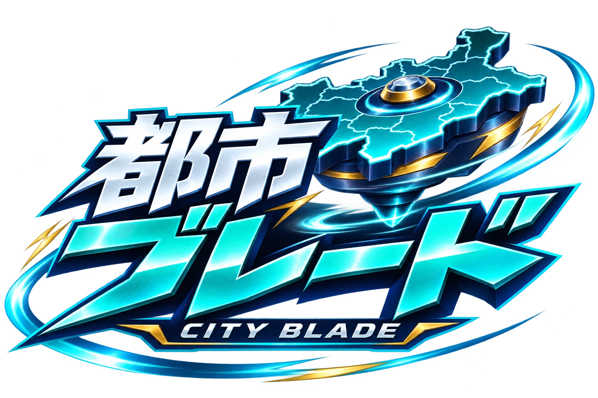

狙いを決めて発射
青い地図を引っ張るかスライダーで角度と強さを調整。「発射する」を押すと開始します。
FREE WEB BETA
あなたの街が、コマになる。
地図を選ぶ。ねらう。ぶつかる。
形の違いを楽しむ、ちいさな地理バトル。
地図 × 回転 × 勝負

EXHIBITION / 1 vs 1
BATTLE RESULT
ひとやすみ
駒を引っ張るかスライダーで調整し、「発射する」で開始します。
青い地図を引っ張るかスライダーで角度と強さを調整。「発射する」を押すと開始します。
場外またはスタミナ切れで相手を撃破。3 vs 3は相手の3つの駒を倒せば勝ち！
大きさと重さはそろえています。輪郭や発射の違いを試してみよう。
都市対抗は同じ県の異なる3市区町村、県対抗は異なる3都道府県でチームを作ります。駒ごとに角度・強さを調整し、舞台の「発射する」で一斉発射。味方同士の衝突ではダメージを受けません。45秒で決着しない場合、1 vs 1は引き分け。3 vs 3は残った駒の数、合計スタミナの順で判定します。
市区町村・都道府県の地図データをもとにしています。小さな島や飛び地を省き、主な陸地を簡略化しています。細いくぼみは衝突判定では外側の輪郭にまとめています。実際の面積・人口・地域の優劣を表すゲームではありません。発射後は自動で対戦が進みます。
地図出典：国土交通省 国土数値情報（行政区域）を加工（CC BY 4.0）。
ページを離れると対戦は一時停止します。戦績のサーバー保存やオンライン対戦はありません。
都市ブレードは、無料・登録不要で遊べる開発中のWebベータ版です。遊び心地を確かめながら、見た目やルールを調整しています。
今後は「日本地図 都市パズル」のアプリ内で遊べるようにし、その移行に合わせてWeb版を終了する予定です。時期はまだ決まっていません。決まり次第、お知らせなどでご案内します。
現在、都市ブレードを遊べるのはこのWebページです。アプリの記録や対抗戦ポイントには反映されません。